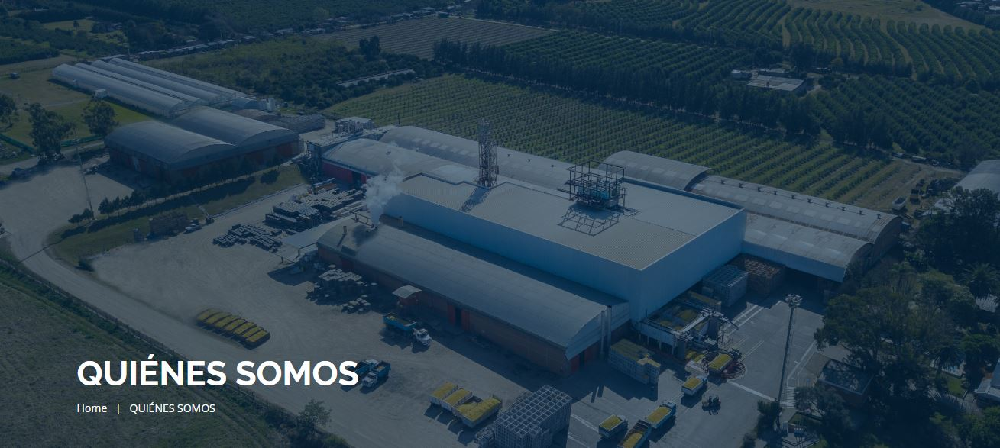

.jpeg)
UNA HISTORIA DE VICTORIAS
La fundación de nuestra empresa se remonta al año 1935, cuando don Ignacio Trapani y su esposa Rosalía, se instalaron en Los Nogales y se iniciaron en el cultivo de cítricos dulces. Años después, la Enfermedad de la Tristeza causó la muerte de esas plantaciones, pero la adversidad ayudó a tomar un nuevo y acertado camino: cultivar el limón. En el año 1965, Don Vicente Trapani, el menor de los tres hijos de Ignacio Trapani, inicia la actividad industrial con la instalación de la primera máquina para extracción de aceite esencial de limón. A partir de ahí, nos consolidamos como empresa dedicada a la explotación integral del limón, convirtiéndonos en un referente de la actividad a nivel internacional. Nuestro centro productor y oficinas de administración central se ubican en Los Nogales, al norte de la ciudad capital de Tucumán, corazón de la limonicultura. Tecnología de primer nivel y excelencia en nuestros servicios, aplicada a especiales condiciones agroecológicas, constituyen nuestro prestigio y calidad.
